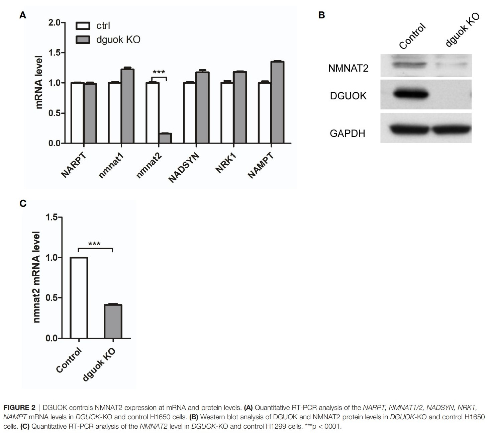

DGUOK调节烟酰胺腺嘌呤二核苷酸生成
脱氧鸟苷激酶(Dguok)具有通过介导细胞线粒体自噬发挥调控巨噬细胞极化的功能，研究表明Dguok敲低后细胞自噬水平增强，LC-3B点状聚集增加，自噬小体数目显著上升，利用免疫荧光共定位的方法证实在Dguok干扰的细胞中线粒体自噬水平增强，说明Dguok干扰触发线粒体自噬。更加重要的是，Dguok敲低的Raw264.7细胞M1型相关指标几乎被完全抑制。IL-1，IL6，TNF-α，iNOS RNA以及蛋白水平表达均被显著抑制，表面marker CD11c的表达也降低。脱氧鸟苷激酶（DGUOK）的缺乏会导致mtDNA的耗竭和线粒体功能障碍，在此展示了DGUOK基因敲除（Dguok-/-）小鼠的长期生存的分子途径。
参考文献:

DGUOK控制mRNA中NMNAT2表达.和蛋白质水平
DGUOK敲除小鼠器官相对比重明显高于正常小鼠
DGUOK通过NMNAT2调节烟酰胺腺嘌呤二核苷酸生成
敲除DGUOK基因的小鼠模型建立过程图解
脂褐素在DGUOK敲除小鼠肝脏和皮肤出现积聚